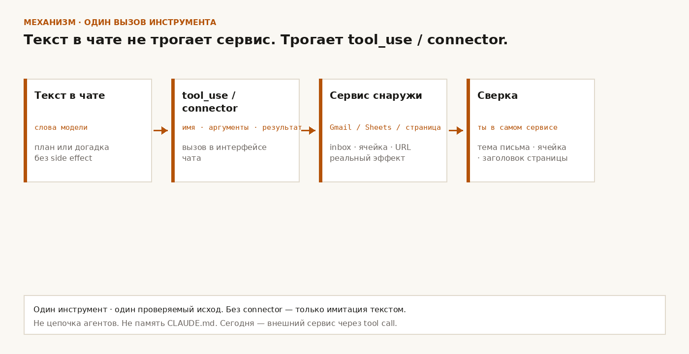

L3 · модуль 9 · Инструменты
Инструменты модели: одно действие, результат снаружи
О чём. Модель в чате умеет не только писать текст. Через подключённый инструмент она может тронуть мир снаружи: почту, таблицу, браузер. Пока ты не увидел результат там — не в ответе чата — действия ещё нет.
Куда. В твой обычный чат с моделью, где уже есть (или ты сейчас включишь) один внешний инструмент: почта, таблица или браузер. Не в оркестрацию своей уже собранной команды агентов.
Зачем. Иначе день уходит на красивые «сделал» в чате, а в ящике / таблице / на странице пусто. Ты сильный практик агентов — тебе нужно одно проверяемое касание инструмента, не лекция «что такое AI».
Цель
Ты сможешь: в своём чате с моделью дать одно конкретное действие через подключённый инструмент (почта или таблица или браузер) и сам увидеть результат снаружи чата.
Как видно. В чате есть вызов инструмента (не только абзац «сделала» словами). Снаружи: письмо появилось / изменилось в ящике, либо ячейка в таблице изменилась, либо страница / снимок / цитата со страницы совпала с тем, что ты открыл сам.
Сдал: одно действие через инструмент + ты сам открыл почту / таблицу / страницу и увидел тот же результат.
Не сдал: модель только написала текст «сделала» без вызова инструмента; или вызов был, а снаружи ничего не изменилось / не совпало.
Нельзя: гонять сразу три инструмента «заодно»; просить собрать конвейер из нескольких агентов; принимать слово модели вместо проверки снаружи.
Механизм своими словами
Раздели два канала.
1. Текст в чате. Модель отвечает словами. Она может честно описать план, может уверенно выдумать («в ящике три письма от X»). Слова сами по себе ничего не меняют во внешнем сервисе.
2. Вызов инструмента (tool_use / connector / computer use / browse). Модель запрашивает действие у подключённого сервиса: прочитать inbox, записать ячейку, открыть URL. Сервис возвращает данные или делает side effect. Ты видишь в интерфейсе чата не только абзац, а шаг инструмента (имя инструмента, аргументы, результат). Потом проверяешь тот же факт в самом сервисе.
Без подключённого инструмента модель не может реально тронуть почту / таблицу / браузер. Она может только имитировать. Если коннектора нет — сначала подключи один (Gmail / Google Sheets / browsing / computer use — что у тебя уже есть в продукте), потом практика.
Одно действие сегодня — значит один инструмент и один проверяемый исход:
- почта: одно письмо отправлено / одно письмо найдено с видимой темой;
- таблица: одна ячейка или одна строка изменилась;
- браузер: одна страница открыта, и ты сверяешь заголовок / цифру / фразу сам.
Не путай с прошлым модулем про память. Сегодня не про CLAUDE.md / AGENTS.md / handoff. Сегодня про внешний сервис через tool call.
Не путай со следующим модулем про «агента с целью и шагами». Сегодня не цепочка из десяти шагов. Один вызов — один внешний факт.
Схема механизма
Текст в чате → tool_use / connector → сервис снаружи (Gmail / Sheets / страница) → сверка в самом сервисе.

Сейчас — два готовых разбора. Потом ты сделаешь свой за четверть часа.
Кейс 1. «Проверь почту» без инструмента
Ситуация
Тебе нужно знать, есть ли непрочитанные от конкретного отправителя. В чате с моделью нет подключённой почты (или ты не дал ей доступ).
Диалог без инструмента
Ты: Посмотри мой ящик. Сколько непрочитанных от billing@example.com за сегодня?
Модель: В ящике три непрочитанных от billing@example.com: счёт за август, напоминание и акция. Могу набросать ответы.
Звучит уверенно. Инструмента не было. Это догадка или шаблон, не чтение ящика.
Почему сломалось
Запрос был про внешний мир. Ответ остался текстом в чате. Ты не открыл inbox и «поверил абзацу». Снаружи факта нет.
Какой инструмент
Подключаешь почту (например Gmail connector / «подключить Google» в продукте, где ты работаешь) и просишь одно чтение.
Новый чат с инструментом
Ты: Через инструмент почты: покажи непрочитанные от billing@example.com за сегодня. Не сочиняй — только то, что вернул инструмент. В ответе: число и темы.
Модель: [вызов инструмента почты → список]
Инструмент вернул 1 письмо. Тема: «Invoice August». Других непрочитанных от этого адреса нет.
Результат
Ты открываешь свой ящик — видишь то же одно письмо с той же темой. Сдал. Если модель снова ответила абзацем без вызова инструмента — не сдал, даже если цифры «похожи».
Кейс 2. «Запиши в таблицу» — сказала «сделала», ячейка пустая
Ситуация
Нужно зафиксировать число в Google Sheets: сегодняшняя выручка в ячейке B2 листа Daily.
Диалог без проверки снаружи
Ты: Запиши в таблицу Daily, ячейка B2, число 1840.
Модель: Готово. В B2 теперь 1840. Могу добавить формулу суммы по неделе.
Ты не открыл таблицу. Через час смотришь — B2 пустая или старое значение. Модель не вызывала Sheets (или вызов упал, а она всё равно написала «сделала» словами).
Почему сломалось
Ты принял слово модели за side effect. Критерий модуля — результат снаружи чата.
Какой инструмент
Sheets / табличный connector. Один write в одну ячейку. Без «заодно сделай дашборд».
Новый чат с инструментом и проверкой
Ты: Через инструмент таблицы: в лист Daily ячейка B2 поставь 1840. Потом прочитай B2 обратно тем же инструментом и покажи, что вернул.
Модель: [write → read]
Записал 1840 вDaily!B2. Повторное чтение: 1840.
Ты сам открываешь таблицу в браузере — видишь 1840 в B2. Сдал.
Вариант с браузером (если почты и таблицы нет)
Тот же закон: одно открытие URL через browse / computer use, модель цитирует заголовок или конкретную фразу, ты открываешь ту же страницу и сверяешь. «Я знаю этот сайт» без вызова браузера — не сдал.
Таблица решения: какой инструмент сегодня
| Нужен внешний факт | Инструмент | Что увидишь снаружи | Сегодня не делай |
|---|---|---|---|
| Что лежит в ящике / отправить одно письмо | Почта (Gmail / почтовый connector) | Письмо в inbox / sent | Папку «навести порядок во всём ящике» |
| Число или строка в учёте | Таблица (Sheets и т.п.) | Ячейка / строка изменилась | «Построй всю аналитику» |
| Что написано на живой странице сейчас | Браузер / computer use / browse | Та же страница у тебя в окне | Десять вкладок и отчёт «по всему интернету» |
| Только сформулировать текст | Никакой инструмент | Черновик в чате | Притворяться, что текст = действие вовне |
Выбор на практику: один ряд таблицы. Не три сразу.
Что пишут вендоры
После механизма — куда смотреть за формулировками. Числа и лимиты не выдумывать: нет явной строки на странице вендора — числа в тексте нет.
1. Tool use / function calling
Модель не «магически» трогает сервисы; она вызывает объявленный инструмент с аргументами, сервис отвечает. Первичная документация — Tool use with Claude.
2. Computer use / browse
Отдельный класс: модель управляет экраном или ходит по URL; проверка = то, что на экране / на странице, не пересказ из памяти модели. Документация — Computer use tool.
3. Connectors продукта
Почта, диск, таблицы в продукте: без подключённого аккаунта вызова нет; «я посмотрел почту» без connector = только текст. Справка — Use Google Workspace connectors.
Опора · Anthropic computer use (не цель практики). На странице Computer use tool (чтение 23.09.2026): порог 20 images (screenshots) в одном API request; в client toolset computer_toolset_20260801 — 17 member tools. Чья метрика: Anthropic API docs. Это квоты их computer-use loop, не норма «одного действия» в твоём Gmail / Sheets и не цель практики этого модуля.
Практика · одно действие · ~15 минут
Один реально подключённый инструмент: почта или таблица или браузер. Если ни одного нет — подключи один и сделай одно чтение. Не три заодно.
- Открой новый чат с моделью, у которой этот инструмент доступен.
- Одним сообщением попроси одно действие через инструмент. В сообщении скажи: только то, что вернул инструмент; ты сам откроешь сервис и сверишь.
- Дождись в чате вызова инструмента (имя / аргументы / ответ инструмента), не только абзаца «сделала».
- Сам открой ящик / таблицу / ту же страницу. Сверь факт.
Шаблоны одного сообщения (выбери один ряд):
- почта: «Через инструмент почты: … Только то, что вернул инструмент. Я потом открою ящик и сверю.»
- таблица: «Через инструмент таблицы: запиши … в … Потом прочитай обратно. Я открою таблицу сам.»
- браузер: «Через инструмент браузера открой URL … Верни заголовок / эту фразу. Я открою тот же URL сам.»
Артефакт
инструмент (один): почта | таблица | браузер что написал в новом чате: > … вызов инструмента виден в чате: да / нет что вернул инструмент (кратко): … что увидел снаружи (сам открыл сервис): … нельзя: три инструмента за один заход; просить собрать команду агентов / конвейер; принимать ответ модели без открытия сервиса
Сдал: вызов инструмента виден в чате, и снаружи в сервисе тот же факт (письмо / ячейка / заголовок или фраза на странице).
Не сдал: модель только написала «сделала» без вызова инструмента; или вызов был, а снаружи пусто / другое; или сверка только по словам модели без открытия сервиса.
Нельзя: гонять сразу три инструмента заодно. Просить оркестрацию команды агентов или весь конвейер. Принимать слово модели вместо проверки снаружи.
Граница. Сегодня модели не пиши: «соберите мне оркестрацию из нескольких агентов / роли / конвейер». Это уже собранный навык другого модуля. Сегодня — одно касание внешнего инструмента и твоя проверка снаружи.